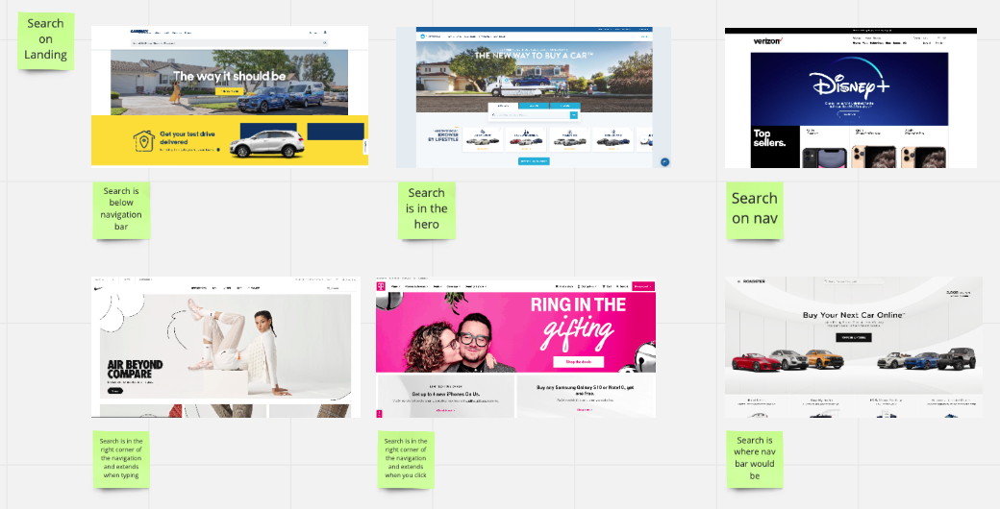
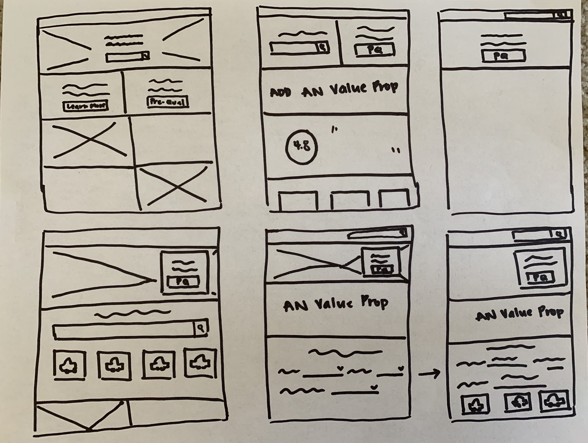

Introduction
Auto Navigator is a platform that educates customers on how much car they can afford through pre-qualifications (with no impact to their credit score). A customer can search, save, and share their car interest with the dealer. After the customer pre-qualifies, the customer is able to see the monthly payment and APR personalized to their finances. Auto Navigator is looking to bring the search exprience to tha landing page.
The Challenge
In previous user research and business analysis, the lack of a search experience was idenitified on our landing page. The need was to bring the search experience ot the landing page allowing customers to quickly search. I had to craft a search experience thaat did not distract from our pre-qualifcatio experience.
 A compliation of other search experiences.  Initial sketches of search experiences.My Role
As a designer, I conducted competitive analysis of other auto experience and overall retail sites. I explored different iterations of search.
The Deliverables
Driven by search patterns, I created a search experience redesign that allows the customer to quickly seaarch above the fold without taking away from our pre-qualification experience. I presented the pre-qualification experience in a box on the hero image to emphasize its importance.